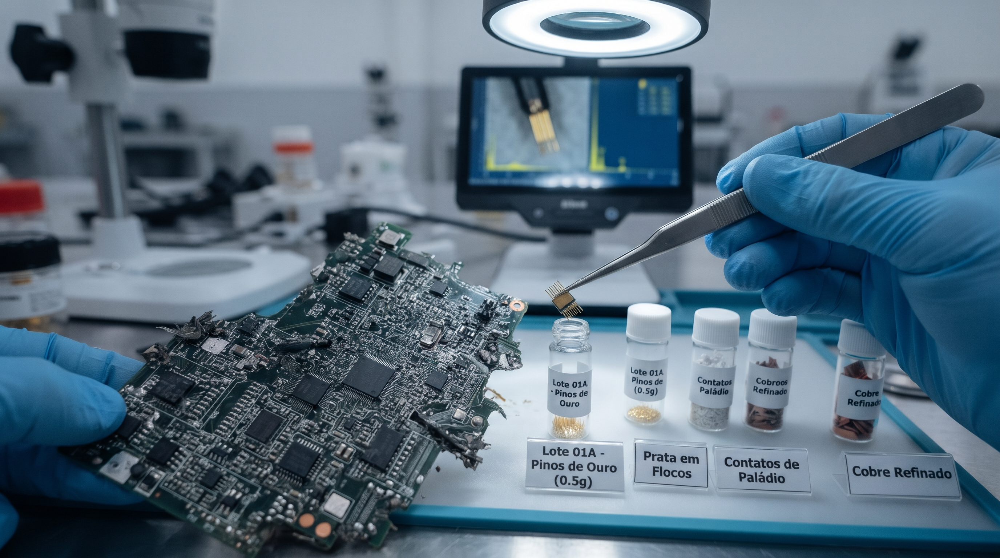
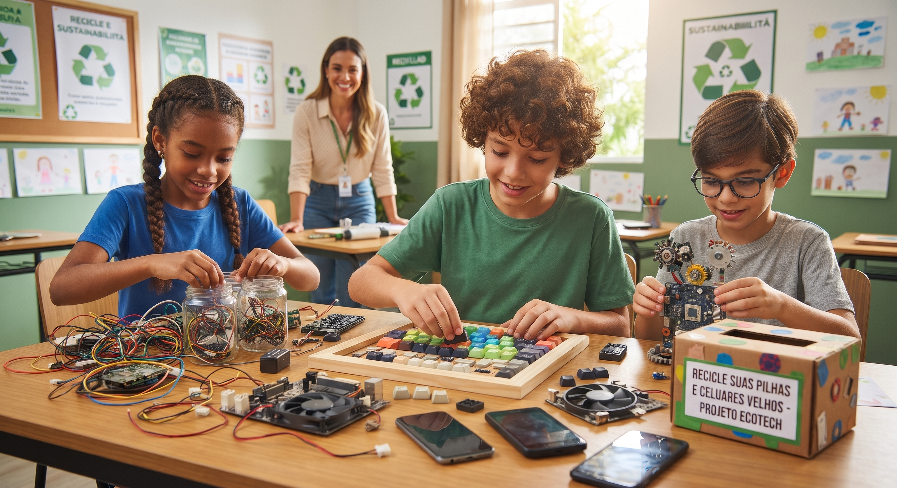
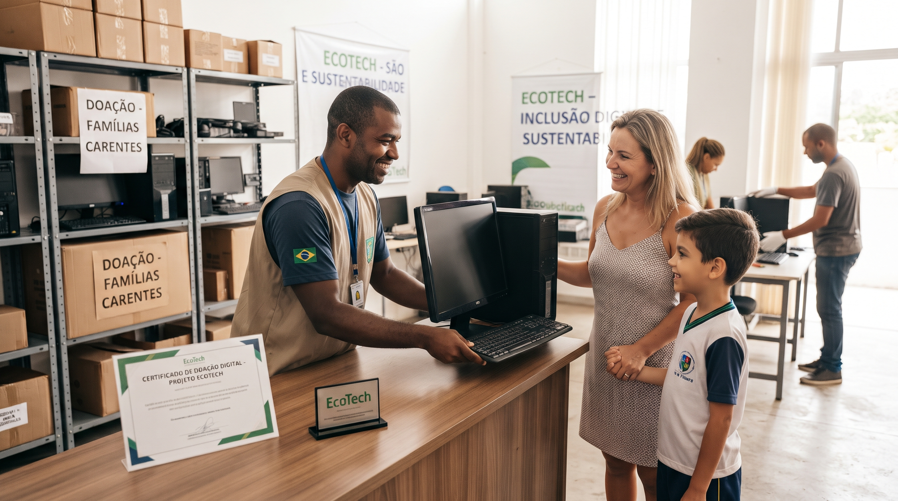

Instalação especializada onde os resíduos eletrônicos são recebidos e triados de forma sustentável.
Fonte:
Gerado por Gemini IA / Projeto EcoTech
Explore nossa galeria com registros visuais sobre o tratamento do lixo eletrônico.
Instalação especializada onde os resíduos eletrônicos são recebidos e triados de forma sustentável.

A recuperação de metais nobres presentes em placas eletrônicas reduz a necessidade de nova extração mineral.

Ecoponto EcoTech instalado na faculdade, facilitando o descarte correto para estudantes.

Oficina de criatividade ensina crianças sobre o descarte correto e reaproveitamento de lixo eletrônico.

Aparelhos eletrônicos são consertados por voluntários e devolvidos à sociedade através de doação.

Famílias e estudantes recebem computadores recondicionados, promovendo a inclusão digital e cidadania.